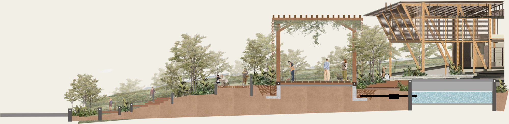
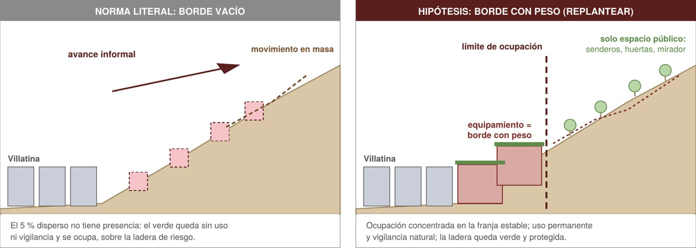
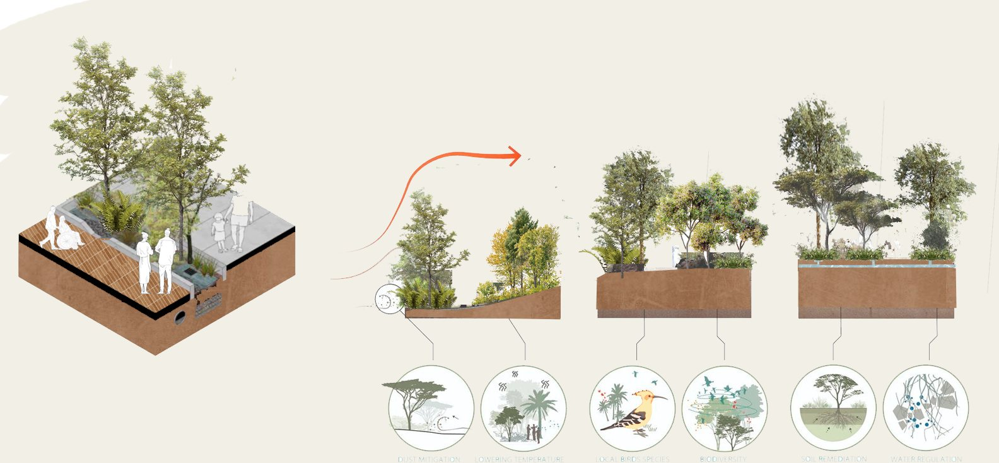

Volumetría 1
Biblioteca y sala de exposiciones
Módulo de consulta, sala de archivos, sala digital, administración, circulación y sala de exposiciones.
Semestre 2026-2 · Universidad Santo Tomás, Medellín
Un borde activo para Villatina: un equipamiento ambiental e intergeneracional donde las huertas, los patios y los senderos entran al edificio y lo vuelven parte de la ladera.

Análisis del lote · Urbanismo V
Empezamos el semestre caminando el borde urbano-rural de Villatina, en la Comuna 8, entre Campo Santo, el Ecoparque Las Tinajas y el Cinturón Verde.
Es un borde bajo presión. Los asentamientos informales suben por la ladera sobre zonas con amenaza de movimiento en masa y de avenidas torrenciales de las quebradas La Castro, San Antonio y La Gallinaza. Campo Santo recuerda la tragedia de 1987.
El lote está en el polígono SE-API-05, un Área para la Preservación de Infraestructuras y del Sistema Público y Colectivo. Ahí decidimos poner un borde con peso: ocupar la franja estable, frenar la ocupación informal y dejar que la ladera siga siendo verde.

Ocupación máxima del 3 % en suelo de protección y del 5 % en suelo rural. En suelo con amenaza solo se permiten ecoparques y recreación pasiva.
La ocupación informal sube por la ladera. Hay amenaza por movimiento en masa y avenidas torrenciales, y el borde no tiene uso ni vigilancia.
Concentrar la ocupación en la franja estable y congelar el resto como zona verde, con un límite físico continuo.
Un borde protegido solo en el papel queda sin dueño y se invade.
La norma supone que construir poco es proteger más. Pero cumplir el índice al pie de la letra produce justo lo que quería evitar. Por eso propusimos un parágrafo para el Art. 126 del Decreto 409: en bordes con presión de ocupación, el índice puede superar el máximo rural si la ocupación se concentra en terreno estable, hay un límite continuo y construido, y ladera arriba solo quedan espacio público, huertas, senderos, miradores y obras de mitigación.

Usar el retiro como espacio de transición, recorrido, educación ambiental y permanencia.
Aprovechar la topografía y las visuales hacia el valle.
Conectar el Ecoparque Las Tinajas, Campo Santo y el borde verde en un solo sistema.
Análisis demográfico
Contamos manzana por manzana. Lo que encontramos fue una comunidad joven: muchos niños, jóvenes y adultos jóvenes.
Esa misma lectura deja ver hacia dónde va el barrio: dentro de unas décadas esa población va a envejecer en el mismo lugar. Así que el proyecto no podía pensarse solo para hoy. Propusimos un equipamiento que acompañe las distintas etapas de la vida, con espacios de encuentro, aprendizaje, bienestar y cuidado.
3.351 personas usarían el equipamiento
Proporción por sexo en las manzanas analizadas: 48 % mujeres, 51 % hombres.
Análisis climático
Estudiamos cómo se comporta el valle en la ladera: temperatura, confort, sol, viento y lluvia. De ahí salieron las estrategias pasivas que después definieron cubiertas, patios y orientación, y la decisión de recoger el agua lluvia de las cubiertas para regar las huertas.
Ideas proyectuales
El paisaje como infraestructura social y espacial del proyecto.
Las huertas y las áreas verdes no quedan aisladas: se meten poco a poco en el equipamiento y generan patios, espacios de transición y lugares de permanencia donde arquitectura y paisaje se mezclan.
Queríamos un entorno donde envejecer estuviera acompañado por la naturaleza. La arquitectura se organiza alrededor de patios, jardines, huertas y recorridos contemplativos para que la gente pueda caminar, descansar, observar, cultivar y encontrarse en un mismo sistema.
Transmitir memoria
+ enseñar
+ disfrutar
+ envejecer activamente


Forma y programa
Con la idea definida, repartimos los usos en volúmenes que siguen la topografía. Cada color de la convención gráfica corresponde a un tipo de actividad, y así se lee en todas las plantas y secciones.
Volumetría 1
Módulo de consulta, sala de archivos, sala digital, administración, circulación y sala de exposiciones.
Volumetría 2
Jardín, zona de descanso, talleres de agricultura, carpintería y artes, conectados directamente con las huertas públicas.
Volumetrías 3 y 4
Módulos de comercio, restaurante, gradas hacia la cancha, termas, vivero y mirador.
Circulación y conexión
El edificio se piensa como una extensión del espacio público. Una red de patios, terrazas y circulaciones deja que el espacio público atraviese el proyecto.
La circulación abraza el conjunto, se adapta a la pendiente con rampas y escaleras, y conduce desde los tres accesos hacia el parque recreativo, las huertas urbanas, las zonas recreativas y el jardín.
Accesibilidad y actividadEncuentro, aprendizaje y culturaPaisaje y contemplación
Secciones y volumen
En la etapa final llevamos todo a secciones e isométricos. Las secciones muestran cómo los niveles siguen la topografía: espacio público abajo, huertas en la mitad, talleres más arriba y el mirador con comercio en la parte alta.
Estructuras IV · Cubiertas y cuantificación
La cubierta curva en madera se volvió la imagen del proyecto, y en Estructuras IV tuvimos que demostrar cómo se sostiene y cómo maneja el agua.
Las cubiertas de madera se arman con casetones de 0,50 × 1,20 m sobre viguetas de glulam, apoyadas en vigas y columnas metálicas. Una franja de glulam con claraboyas se apoya sobre el muro de contención existente, y un domo seccionado en madera lleva malla de sombra.
Todas las cubiertas drenan con pendiente hacia canales y bajantes que llevan el agua lluvia a la huerta.
Cuantificación y presupuesto
$9.516 millones
Valor total estimado del predimensionamiento académico, con precios de octubre de 2026. Incluye cimentación, estructura metálica, tensoestructuras, muros, fachada, cubierta, cielos y módulos de madera. No incluye pisos, escaleras, instalaciones, carpintería, paisajismo ni diseños.
Entregas del semestre
Urbanismo V · El lugar
Urbanismo V · Postura
Urbanismo · Estrategias
Plantas · pliego 1
Plantas · pliego 2
Plantas · pliego 3
Secciones estructurales
Planos estructurales